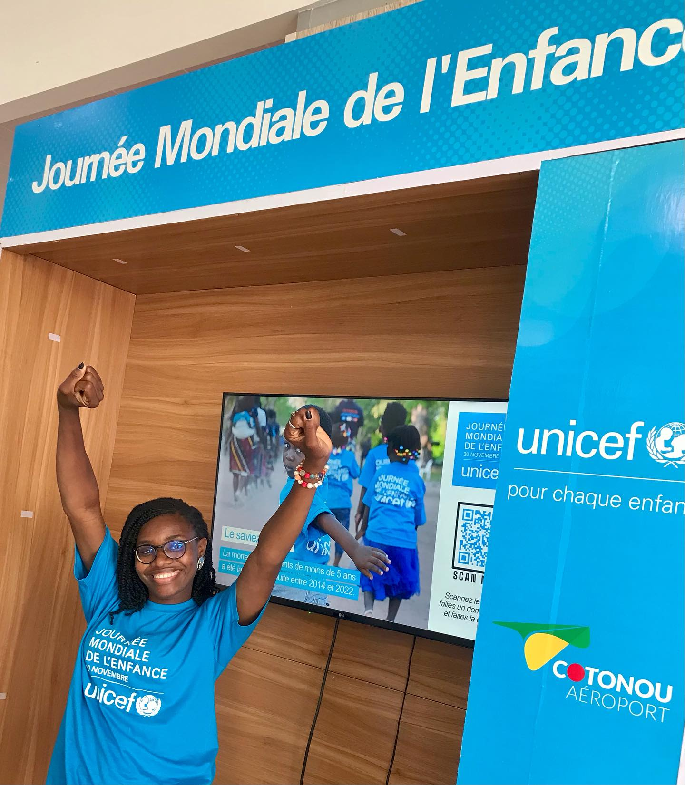

@_synnova
Le canal le plus direct pour suivre l'univers et les prises de parole.
Contact
Parlons-en de facon simple, directe et humaine.
Si vous souhaitez animer un evenement, porter une campagne, rendre une initiative plus visible ou ouvrir une collaboration a impact, la conversation peut commencer ici.

Formulaire de contact
Que ce soit pour un evenement, une campagne ou une simple question, remplissez ce formulaire et votre message sera prepare pour l'envoi a mon adresse email.
Merci pour votre message. Votre client email va s'ouvrir pour finaliser l'envoi.
Coordonnees
Instagram et Facebook sont deja actifs. L'email reste disponible pour les briefs formels et les partenariats.
Le canal le plus direct pour suivre l'univers et les prises de parole.
Un profil public qui permet de comprendre la posture, les actions et l'audience.
Pour les briefs detailles, les partenariats formels et les invitations professionnelles.
Localisation
Disponible localement et a l'echelle nationale pour les projets qui ont du sens.
Action
Les points de contact publics les plus simples restent Instagram, Facebook et l'email direct.